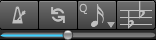

There are several other buttons for controlling playback and score transposition
- Metronome Button - Enables metronome sound when playing or recording.
- Loop Button - Enable and set loop playback or Ctrl[cmd] click to enable and set Replay position.
- Quantize Button - Set value to be used when transcribing notes during record on using Transcribe menu command.
- Show Transpose Score Button - Displays all tracks in Concert key or the track's transposed key.
- Tempo Offset.Slider - Adjust the tempo by a percentage. This does not change tempo markings in your score.